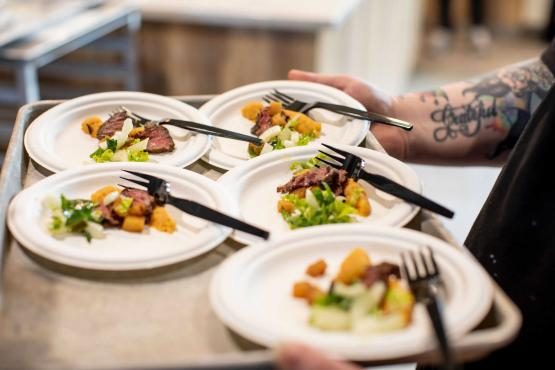

data analyst enthusiast and
visualization specialist
Explore my portfolio showcasing a passion for research and proficiency in Tableau, SQL, Stata, R Studio, and Excel. I specialize in transforming complex data into visually compelling insights. Join me on this data-driven journey, where I share experiences and provide valuable insights to fellow enthusiasts. Let's unlock the power of information together!

Welcome to the SuperStore Tableau Project, where I showcase the power of data visualization and analysis. With interactive indicators and customizable date ranges, you can explore key metrics that interest you. The user-friendly interface and real-time data updates make it easy to gain valuable insights into SuperStore's performance and drive growth. Happy exploring! .

OH! yOU Cookin!!.
Experience the power of data-driven insights with Veg Prep Performance Analysis project. By harnessing the data from Veg Prep, a specialized kitchen at Ohio University, I meticulously evaluate its performance based on the delivery of food items to dining courts and retail locations campus wide. The goal is to optimize operations and ensure exceptional quality throughout the entire supply chain. Delve in to uncover valuable insights and pave the way for kitchen excellence at Ohio University.

In this project, I delved into the rich world of Airbnb data for the year 2016, focusing specifically on Seattle, WA. Through meticulous analysis and curation using SQL, I unearthed valuable insights for individuals interested in renting or investing in Airbnb properties within the Seattle, WA area. Join me as we explore this data-driven narrative, empowering you with key information to make informed decisions in the dynamic world of Airbnb. Download Dataset
Unveiling the factors influencing growth in Sub Saharan Africa (2000–2010), I employ Stata for econometric analysis across 26 countries. Focused on aspects like income inequality, trade openness, human capital, government expenditure, investment, and political stability, my study uncovers a significant, detailed relationship. By assuming both linear and nonlinear relationship and using First Differences estimation to address country-specific effects, I reveal a compelling negative link between income inequality and economic growth, highlighting its detailed impact. Join my exploration into the intricacies of data and economic insights!
Download Dataset
In this study, I passionately investigate the ramifications of The Gambia's withdrawal from the Commonwealth in 2013 on its net exports and public debt. Employing the Synthetic Controls Method and harnessing the analytical prowess of R Studio, I treated the withdrawal as a political event. By comparing The Gambia with other sub-Saharan African Commonwealth nations as control groups, I reveal that post-withdrawal, public debt surged by an average of 14.1% (2014-2017), while net exports rose by an average of 81% (2014-2018). Rigorous placebo tests affirmed the Commonwealth's influence on public debt but not on net exports. This study underscores my dedication to impactful research and proficiency in advanced analytical tools.
Download Dataset
Welcome to the captivating realm of "RNX Cookie Company"! As a passionate data analyst, I embarked on a thrilling journey to create a hypothetical multinational company with locations in America and Europe. Through my expertise in Tableau, I transformed raw data into stunning visualizations, shedding light on the company's performance across products, locations, and revenue streams to unveil the extraordinary story behind "RNX Cookie Company".